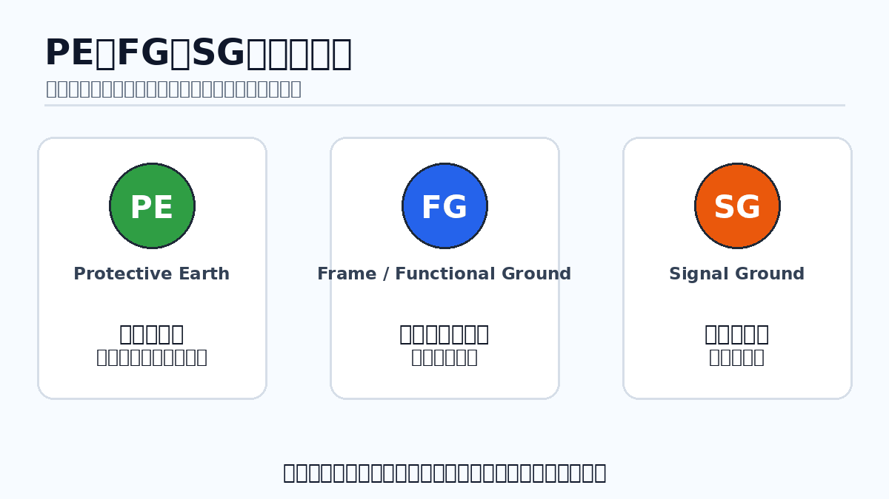
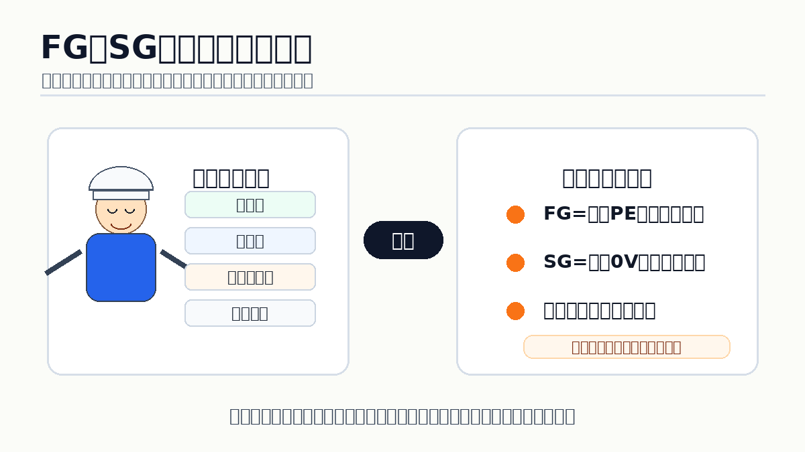
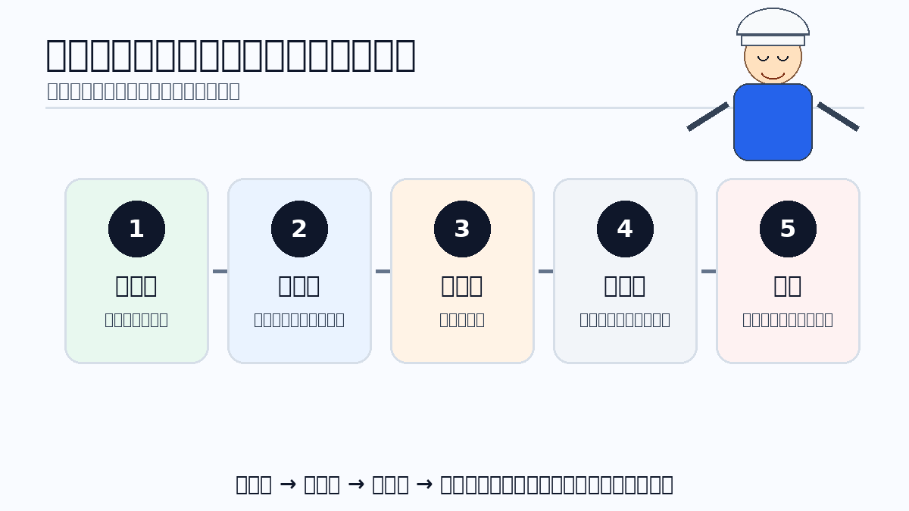

1. 先に結論：PE・FG・SGは「全部アース」でまとめない
PE・FG・SGは、略号が似ていても役割が違います。まずPEを保護目的として分け、FGとSGは機器・メーカーの定義を確認する、という順番で読むと整理しやすくなります。
覚える軸は3つだけ
PE＝保護、FG＝フレーム／機能、SG＝信号基準。ただしFGやSGの具体的な意味・接続条件は、対象機器の回路図や公式マニュアルで確認します。

先輩略号を見ただけで『ここは全部同じアース』と考えないのが最初のポイントだよ。

新人FGやSGは、機器のマニュアルまで確認して意味を確定するんですね。
2. PEとは？保護を目的とした接地
PEは一般に Protective Earth を表し、感電防止などの保護目的に関わる接地として扱われます。IECでは保護接地に関する記号や用語が定義されています。
PEは安全に関わる役割
PEをノイズ対策用グランドと同じ意味で扱わないことが重要です。実機の作業は設備を安全な状態にしたうえで、対象機器の公式資料と現場の安全ルールに従います。
3. FGとは？フレームや機能上の接地を示すことがある
FGは Frame Ground と説明される製品があります。一方で、機器によっては機能上の接地に近い役割として扱われることもあり、FGという略号だけからIECのFunctional Earthと完全に同一と決めつけることはできません。
現場での読み方
FGを見つけたら、端子名称、接続先、シールドとの関係、PEとの関係をマニュアルで確認します。
4. SGとは？信号の基準として使われるグランド
SGは Signal Ground を表す例があり、通信や計測などの信号基準として使われます。オムロンCP1EのRS-232C資料では、SG（0V）がSignal groundとして示される例があります。
0Vと同じとは限らない
SGが0Vと表記される機器があっても、すべての装置で同じ構成とは限りません。制御電源0V、PE、FGとの関係は、その機器の回路図・端子表で確認します。
5. PE・FG・SGの役割を図で比較
役割の違いを一枚で整理すると、PEだけは保護目的が軸で、FG・SGは機器の機能や信号基準と結びついていることが見やすくなります。

| 表記 | 代表的な意味 | 主に見る役割 | 確認先 |
|---|---|---|---|
| PE | Protective Earth | 保護・安全 | 安全要件、機器マニュアル |
| FG | Frame Ground など | 筐体・シールド・機能上の接地 | 端子表、回路図、機器マニュアル |
| SG | Signal Ground | 通信・計測などの信号基準 | 通信仕様、回路図、機器マニュアル |
6. FG・SGはメーカーや機器によって表記の意味が変わる
メーカー資料を見ると、同じ「接地」でもPEと機能上の接地を明確に分ける例や、RS-232CのSGとコネクタ外装FGを分ける例があります。重要なのは、略号を一般化しすぎないことです。

オムロンの例
CP1EのRS-232C資料では、SG（0V）はSignal ground、FGはFrame groundとして示される例があります。
Schneider Electricの例
M241資料ではPEとFEを区別し、保護目的と機能目的を分けて説明しています。
7. 図面・端子表で迷ったときの確認手順
PE・FG・SGの表記を見つけたら、いつもの配線パターンに当てはめるのではなく、その機器の資料を順番に確認します。

- 端子の略号と正式名称を確認する
- 回路図でその端子が何と関係するかを見る
- 端子表・仕様表の注記を確認する
- 公式マニュアルの接地・通信・シールド説明を確認する
- 不明な点は機器固有の仕様として保留する
8. よくある混同
FG＝必ずPEと思う
製品によって役割が違うため、略号だけで同一視しません。
SG＝必ず制御0Vと思う
SGが0Vと示される例はありますが、回路全体の0Vと同じ扱いかは機器仕様で確認します。
色だけで判断する
導体色や配線色だけでは端子の役割を確定しません。
ノイズ対策と保護接地を混ぜる
安全目的と機能・信号上の目的は分けて考えます。
9. まとめ
- PEは保護目的を中心に考える
- FGはFrame Groundなどの表記例があるが、機器定義を確認する
- SGは信号基準として使われる例があり、0Vとの関係を確認する
- FGをIECのFEと無条件に同一視しない
- 端子名・回路図・端子表・公式マニュアルを順番に確認する
参考にした公式資料
本文で使った考え方を確認できる一次情報です。資料名から公式ページへ移動できます。
- IEC 60417 Graphical Symbols for Use on Equipment — Protective Earth / Functional Earthingなどの記号確認。
- オムロン CP1E ダウンロード資料一覧（マニュアル） — CP1Eの公式マニュアル入口。
- オムロン CP1E 公式カタログ — RS-232CのFG / SG（0V）表記例を確認。
- Schneider Electric: Grounding the M241 System — PEとFEを区別する説明を確認。